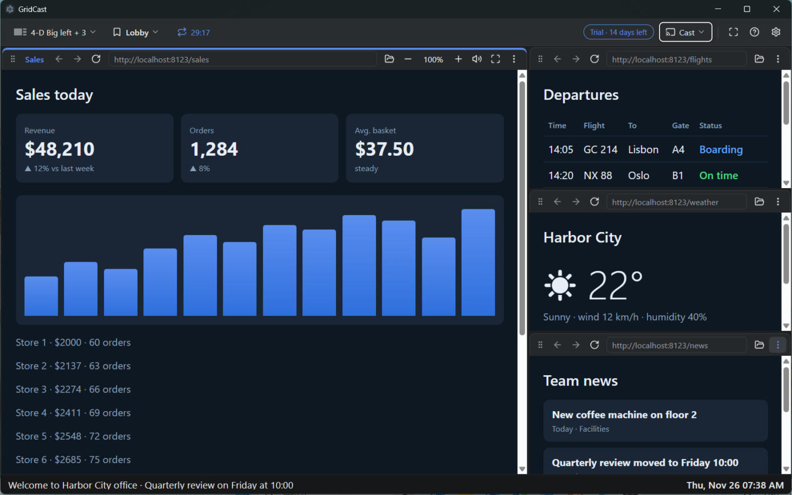
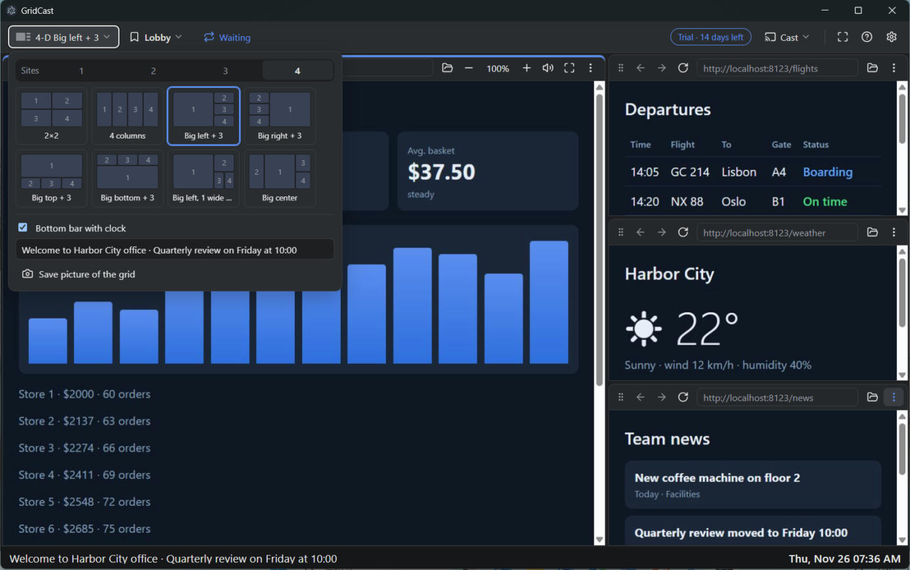
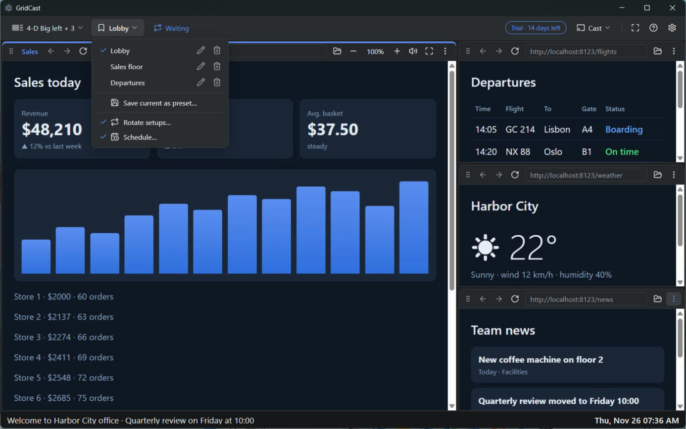
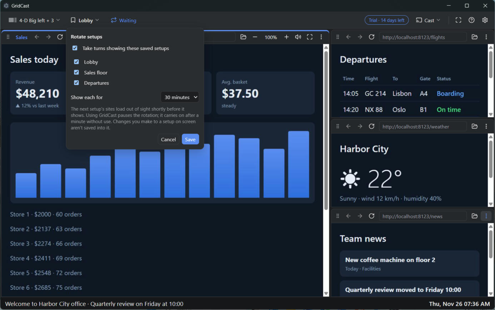
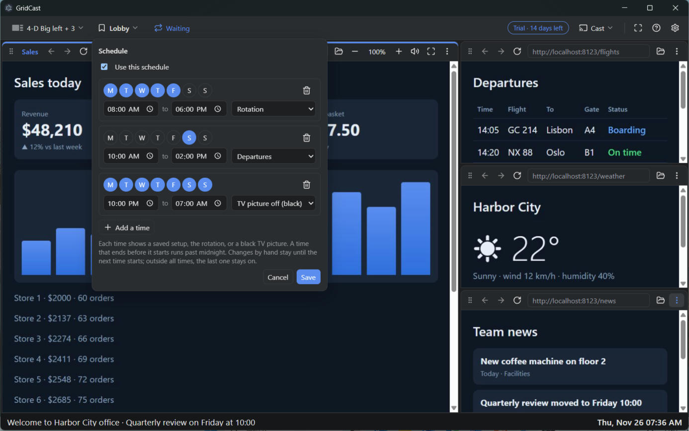
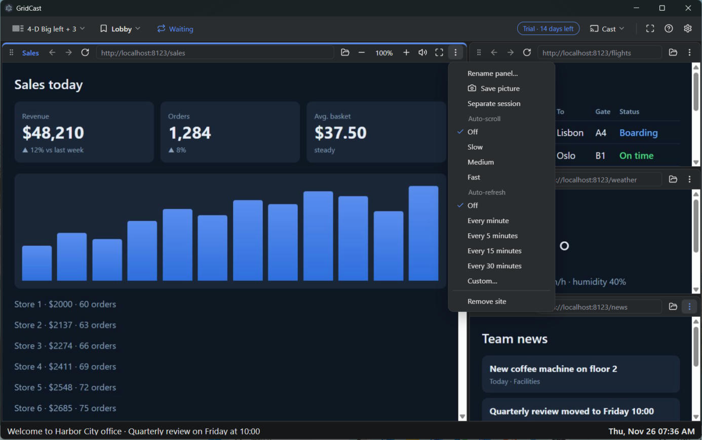
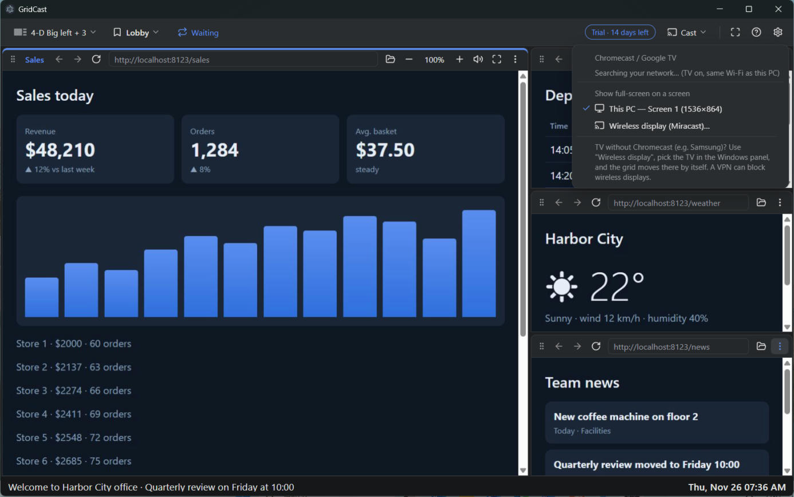
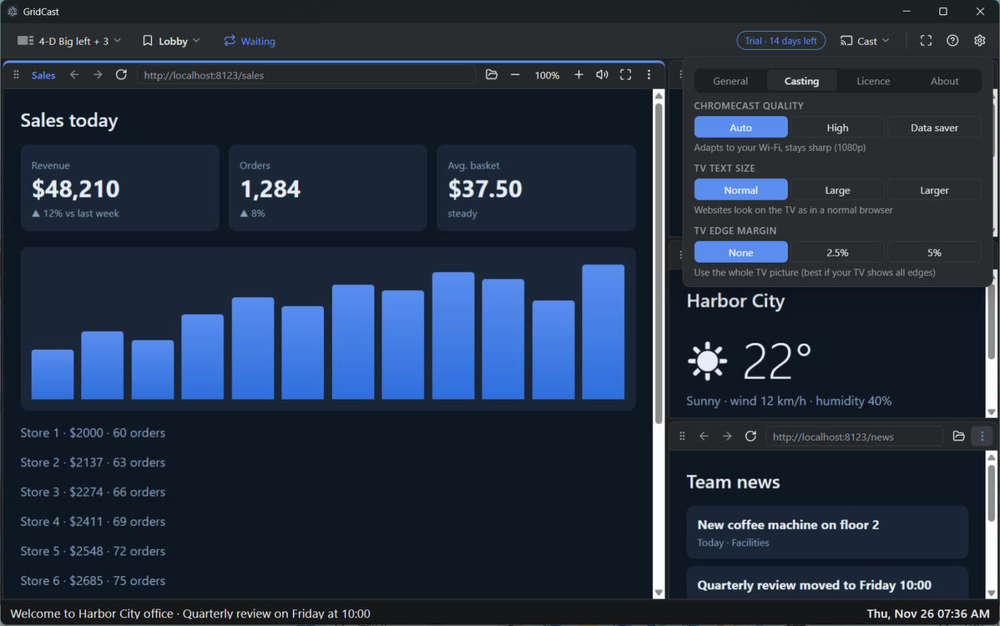
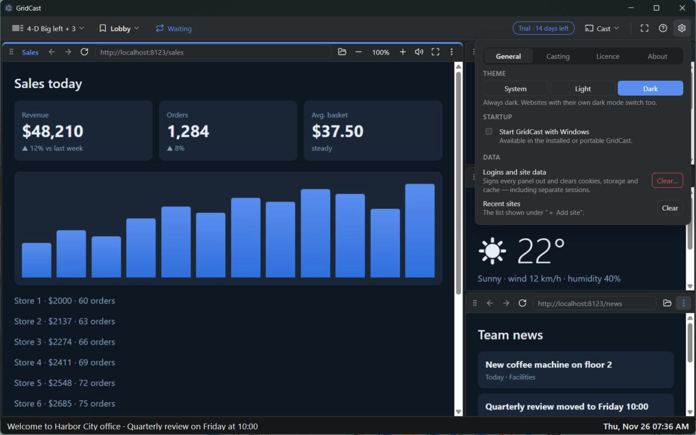
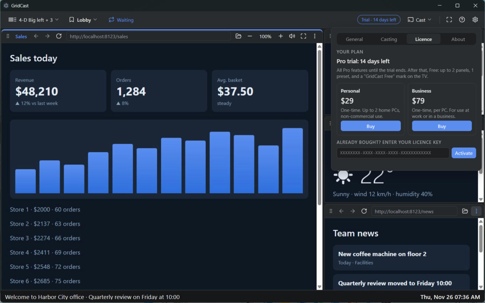

GridCast guide
Everything GridCast does and how to use it, step by step.
Updated for GridCast 0.6.0. Features marked Pro need a Personal or Business licence, or the 14-day trial.
1. Getting started
What you need
- A PC with Windows 10 or 11.
- A TV, if you want the grid on a TV: one with Chromecast or Google TV built in (or a Chromecast / Android TV box plugged into it), one that supports wireless display (Miracast, as most Samsung, LG and Sony TVs do), or an HDMI cable.
- For casting: the PC and the TV on the same network.
Download and install
On the download page there are two files. Pick one:
- GridCast-Setup-x.y.z.exe (recommended): installs GridCast for your Windows user only, without admin rights, and adds Start-menu and desktop shortcuts. It starts in a second or two and updates itself.
- GridCast.exe (portable): one file, nothing to install. Copy it anywhere (a USB stick, for example) and run it. It unpacks itself each time, so it takes 10–20 seconds longer to open, and it can't update itself.
GridCast isn't code-signed yet, so the first time Windows may show "Windows protected your PC". Click More info, then Run anyway. The first time you cast, Windows may ask whether GridCast may use the network: choose Allow for private networks.
First start
- GridCast opens with three empty panels, each with + Add site.
- Click + Add site in a panel, type an address such as
youtube.com, and press Enter. - Fill the other panels the same way. Pick another arrangement with the Layout button at the top left.
- To put the grid on a TV, click Cast ▾ at the top right and pick the TV (see Casting).
Every new copy starts with a 14-day Pro trial: everything works. No account or sign-up is needed. GridCast remembers your sites, layout and settings when you close it, and websites stay signed in.
2. The window at a glance

Top bar, left (what's on screen):
- Layout: a small picture of the current layout. Opens the layout picker, the bottom bar and "Save picture of the grid".
- Presets ▾: shows the setup you loaded last (here "Lobby"). Load, save, rename or delete saved setups; Rotate setups and Schedule.
- Rotation countdown (only while rotating): time until the next setup. Click it to pause.
- "1 hidden site" (only when it applies): sites that don't fit the current layout. They come back with a bigger layout.
Top bar, right (where it goes):
- Trial / Free badge: your plan. Click it for plans and your licence key.
- Update message (only when there is a new version).
- Casting status and Stop (only while casting).
- Cast ▾: send the grid to a Chromecast, a TV screen or a wireless display.
- Present (corners icon): full-screen on this screen with the bars hidden (F11).
- ?: keyboard shortcuts. Gear: Settings.
Each panel has its own bar: the grip to drag it, its name, back / forward / reload, the address, open a file, zoom − 100% +, mute, fill the window, and ⋮ for more. In narrow panels some of these move into ⋮. The blue line on top of a panel marks the active panel: the one keyboard shortcuts act on.
3. Adding and using sites
What you can type in the address box
| You type | GridCast opens |
|---|---|
youtube.com | https://youtube.com |
https://example.com/page | Exactly that address |
localhost:3000, 192.168.1.10:8080 | A page on this PC or your local network (http://) |
C:\reports\today.html or \\server\share\board.pdf | A file on the PC or the network (web pages, PDF, pictures, text) |
weather tomorrow | A Google search for those words |
The folder button picks a local file instead of typing its path. Click into the address box (or press Ctrl+L) to change the address of a panel that already has a site. The list under + Add site shows your recent sites.
Why sites that "can't be embedded" work
Each panel is a full browser, not an embedded frame. Sites that refuse to appear inside other pages (YouTube, Google, banking, many dashboards) work normally. Signing in works as in a browser, and you stay signed in after closing GridCast.
Panel controls
- Back, forward, reload: as in a browser.
- Zoom: − and + from 25% to 300%; click the percentage to go back to 100%. Each panel has its own zoom, even for the same website.
- Mute: the speaker icon. Muted panels are also silent on the TV.
- Fill the window (corners icon or Ctrl+Shift+F): one panel takes the whole window (and the whole TV picture). Esc or the same button returns to the grid. A video going full-screen does the same.
- Rename: click the panel's name (or ⋮ → Rename panel…). Leave it empty to show the page title again.
- Move or swap: drag a panel by its grip (six dots) onto another panel to swap them, or onto an empty panel to move it there. The site keeps its zoom, mute, name, session and auto-refresh.
- Remove: ⋮ → Remove site.
Logins and "Separate session"
All panels share one set of logins, like tabs in one browser: sign in to a site once and every panel showing that site is signed in. To show two different accounts of the same site (two Gmail inboxes, for example), turn on ⋮ → Separate session in one panel. That panel gets its own logins; it reloads when you switch. Settings → General → Clear… signs every panel out.
Pop-ups and new windows
Sign-in pop-ups (for example "Sign in with Google") open as small windows, which usually close by themselves when you're done. Links that would open a new tab open in the same panel instead.
When a site can't load
The panel shows what went wrong (for example "Couldn't reach localhost:3000") with a Retry button, and tries again by itself every minute. When the site is back (internet or server restored), it appears without you doing anything.
4. Layouts

Click Layout (top left). The tabs 1 · 2 · 3 · 4 choose how many sites; each tab shows its layouts: full, side by side, stacked, big left / right / top / bottom, 2×2, 4 columns, big centre and more (15 in all). It opens on your current layout's tab.
- Fewer cells than sites: nothing is lost. The extra sites are kept hidden (and muted), and the top bar shows "1 hidden site". Choose a bigger layout and they come back.
- More cells than sites: the new cells show + Add site.
- On Free, the 1- and 2-site layouts are available; the 3- and 4-site layouts are Pro.
5. Presets (saved setups)

A preset saves the layout, the sites, the page each one is on, and each panel's settings (zoom, mute, name, separate session, auto-scroll, auto-refresh) plus the bottom bar and its message.
- Save: Presets ▾ → Save current as preset…, type a name (for example "Lobby"). Using an existing name replaces that preset (GridCast asks first).
- Load: click its name. Everything on screen is replaced by the preset. The tick and the button show which one you loaded last.
- Rename / delete: the pencil and bin icons.
- Changes you make after loading are not saved into the preset by themselves: save again with the same name to update it. (Your last screen is always remembered when you close GridCast, separately from presets.)
- On Free you can keep one preset; more presets are Pro.
6. Rotate setups Pro

Shows your saved setups one after another, so one TV can show more than 4 sites.
- Save at least two presets.
- Presets ▾ → Rotate setups…
- Tick Take turns showing these saved setups, tick the setups to include, and choose Show each for (30 seconds to 30 minutes, the same for all).
- Save. If the setup on screen isn't in the list, the first ticked one shows at once.
How it behaves:
- Setups show in the order of the Presets menu, then start again.
- About 15 seconds before each switch, the next setup's sites start loading out of sight, so the TV never shows half-loaded pages.
- While you're using GridCast (clicking, scrolling or typing in it, or with a menu open) the rotation waits; the countdown shows Waiting. It carries on after one minute without use. Moving the mouse alone doesn't count.
- Click the countdown in the top bar to pause (it shows Paused); click again to carry on at once.
- The rotation stays on after you close GridCast or restart the PC.
- Changes you make to a setup while it's showing aren't saved into it; the next time round it shows as saved.
- To stop: open Rotate setups… again and untick the first box. A schedule can also start and stop it.
7. Schedule Pro

Changes what's shown at set times of the week. Open Presets ▾ → Schedule…, tick Use this schedule, and add times with + Add a time. Each time has:
- Days: click the day buttons (M T W T F S S) to select or unselect them.
- From – to: a time that ends before it starts runs past midnight (for example 10:00 PM to 7:00 AM).
- What to show: one of your saved setups, Rotation (your Rotate setups list), or TV picture off (black).
How it behaves:
- A time takes effect when it starts (and at once when you save the schedule, or start GridCast, during a time).
- Changes by hand win: if you load another setup during a time, yours stays until the next time starts.
- Gaps: outside all times, whatever the last time showed stays on. For nights, add a "TV picture off" time.
- A setup time stops the rotation; a rotation time starts it.
- If two times overlap, the higher one in the list wins.
- Renaming a setup updates the schedule; deleting one removes its times.
TV picture off: the PC window, a TV screen and the Chromecast picture all turn black and the sound is muted. Sites keep running, so the picture comes back instantly. The PC's screen may go to sleep, and many TVs switch to standby on a black or idle picture (that depends on the TV). Click the black window to turn the picture back on early; on a TV screen, move the mouse to see the hint, then click.
8. Auto-scroll Pro and auto-refresh

Auto-scroll
For long pages on a screen nobody touches (reports, lists, menus). In a panel's ⋮ menu, choose Auto-scroll: Slow, Medium or Fast (about 20, 40 or 80 pixels a second).
- The page waits 5 seconds at the top, scrolls down slowly, waits 5 seconds at the bottom, jumps back to the top, and starts again.
- Pages that scroll inside a box (many dashboards and web apps) scroll that box.
- Scrolling, clicking or typing in that page pauses it for one minute.
- It's saved with the panel, so presets keep it. It starts again on every new page in that panel.
- With the rotation, the switch happens on time even if a page hasn't reached the bottom.
Auto-refresh
⋮ → Auto-refresh reloads the panel every 1, 5, 15 or 30 minutes, or a custom number of minutes (up to 24 hours). Use it for pages that don't update by themselves.
9. Bottom bar and pictures
Bottom bar with clock
In the Layout menu, tick Bottom bar with clock and, if you like, type a message (up to 200 characters). A thin bar along the bottom shows the date and time on the right and your message on the left (scrolling if it's long). It shows on the PC, in Present mode, on TV screens and on the Chromecast picture. It's saved with each preset, so each setup can have its own message.
Pictures (screenshots)
- One site: ⋮ → Save picture.
- The whole grid: Layout → Save picture of the grid, or Ctrl+Shift+S. It includes all panels and the bottom bar as on screen.
- Pictures are saved as PNG files in Pictures\GridCast, named with the date, time and site. A message in the top bar offers Open folder.
10. Casting to a Chromecast, Google TV or Android TV

- Turn the TV on and make sure it's on the same network as the PC.
- Click Cast ▾ and pick the TV under "Chromecast / Google TV".
- After about 15 seconds the top bar shows Casting to … and the TV shows the grid full-screen, without toolbars or menus.
- Use GridCast on the PC as usual; changes appear on the TV within a moment.
- Stop in the top bar ends casting and the TV goes back to its home screen. Closing GridCast also stops it.
Good to know
- The PC view changes while casting: the grid takes the TV's shape (dark strips at the sides) and the panels zoom out, so each website lays itself out for its full size on the TV. Text on the PC looks smaller until you stop.
- Sound: all unmuted panels are heard on the TV. Mute a panel to keep it silent there.
- Keep GridCast open: it can be behind other windows, but not minimised. The picture comes from it.
- PC locked (Win+L): Windows doesn't allow capturing a locked screen, so the TV keeps the last picture; it goes live again a couple of seconds after you unlock.
- Sleep: while casting on a plugged-in PC, GridCast keeps it awake (the screen may still turn off). On battery, Windows' normal sleep settings apply.
- Connection dropped (Wi-Fi hiccup, TV restarted): GridCast reconnects by itself for up to 2 minutes ("Reconnecting…"). If you stop it with the TV's remote, it stays stopped.
- Two PCs, one TV: the TV shows the PC that cast to it last. The other one stops and says "Another device took over". Cast again from it to take the TV back.
Casting settings

- Chromecast quality: Auto (adapts to your Wi-Fi, stays sharp, 1080p) suits most cases; High for videos on a strong network; Data saver (720p) for weak Wi-Fi.
- TV text size: Normal looks like a normal browser on the TV; Large and Larger make text 25% and 50% bigger for viewing from across a room. Each panel's own zoom still applies on top.
- TV edge margin: for TVs that cut off the edges of the picture (see Troubleshooting).
11. TVs without Chromecast: wireless display, HDMI, Present
Wireless display (Miracast), for example Samsung TVs
- Cast ▾ → Wireless display (Miracast)…. Windows' Cast panel opens (the same as Win+K).
- Pick the TV, and accept on the TV if it asks.
- GridCast does the rest: it switches Windows to Extend if needed and shows the grid full-screen on the TV with the bars hidden. It watches for the TV for 3 minutes.
HDMI cable or an extended screen
Connect the TV, then Cast ▾ → pick it under Show full-screen on a screen.
On the TV screen
- The bars are hidden. Move the mouse to the top edge of the TV to bring them back; they hide again about 2 seconds after you move away.
- Esc or Cast ▾ → This PC returns GridCast to a normal window. If the TV disconnects, GridCast comes back to your screen by itself.
- The PC's screen and the TV stay on while GridCast is shown there.
Present mode
The Present button (or F11) fills this screen with the grid, bars hidden. Useful when the PC itself is connected to a big screen, or when you mirror the PC to a TV some other way. Esc leaves it.
A VPN (especially one with a "kill switch") can block wireless displays: disconnect it if the TV won't connect. As a last resort, Chrome's ⋮ → Cast → Cast screen can mirror the whole PC to a Google TV; then press Present in GridCast.
12. Unattended screens (shops, offices, lobbies)
- Start with Windows: Settings → General → Start GridCast with Windows (off by default; works in the installed and portable versions).
- Carries on after a restart or power cut: GridCast opens your last screen and, if it was casting or showing on a TV screen when it closed, carries on with that. It waits up to 3 minutes for a TV that starts more slowly than the PC. It doesn't, if you had stopped casting yourself.
- Rotation and schedules carry on too.
- Sites recover by themselves: a page that crashes reloads after a second; a page frozen for 30 seconds is reloaded; a page that couldn't load retries every minute.
- Screen stays on in Present mode and on a TV screen; the PC doesn't sleep while casting on mains power.
- Only one GridCast runs at a time: starting it again brings the open window to the front.
Tip for a dedicated PC: also set Windows to sign in automatically and to install updates outside opening hours, so a Windows restart doesn't leave the TV on the sign-in screen.
13. Settings

- General: Theme (System, Light or Dark; websites with their own dark mode follow it), Start GridCast with Windows, Clear logins and site data (signs every panel out; can't be undone), Clear recent sites.
- Casting: quality, TV text size, TV edge margin (see Casting).
- Licence: your plan, buy, enter or remove a key (see Plans and licence).
- About: version, Check for updates, the folder where GridCast keeps its data, and the open-source licences.
14. Keyboard shortcuts
They work while GridCast is the active window, also when a website has the keyboard. "Active panel" is the one you last clicked or chose with Ctrl+1–4 (blue line on top). The ? button shows this list too.
| Keys | What it does |
|---|---|
| Ctrl+1 – Ctrl+4 | Go to panel 1–4 |
| Ctrl+R / F5 | Reload the active panel |
| Ctrl+L | Edit the active panel's address |
| Ctrl+Shift+F | Active panel fills the window / back to the grid |
| Ctrl+Shift+S | Save a picture of the grid |
| F11 | Present mode on / off |
| Esc | Leave fill-window, Present or the TV screen |
| Ctrl+M | Mute / unmute the active panel |
| Ctrl + / Ctrl − / Ctrl+0 | Zoom in / out / 100% |
15. Plans and licence

| Free | Personal ($29 one-time) | Business ($79 one-time per PC) | |
|---|---|---|---|
| Panels | Up to 2 | Up to 4, all 15 layouts | Up to 4, all 15 layouts |
| Presets | 1 | Unlimited | Unlimited |
| Rotation, schedules, auto-scroll | – | Yes | Yes |
| Mark on the TV | "GridCast Free" | None | None |
| Use | Any | 2 home PCs, non-commercial | Work, shops, offices; one licence per PC |
| Updates | Yes | All 1.x updates | All 1.x updates |
- Trial: every copy has all Pro features for 14 days from its first start. The top bar shows the days left. After that, GridCast keeps working as Free; nothing is deleted (extra presets and sites wait until you upgrade).
- Buy: Settings → Licence → Buy (or the badge in the top bar, or the website). Payment is handled by Polar. Your key arrives by email.
- Activate: paste the key in Settings → Licence and click Activate. It needs the internet once. After that GridCast checks the key about once a month and keeps working offline for up to 30 days.
- Move to another PC: Settings → Licence → Remove from this PC, then activate on the new PC.
- Refunds: full refund within 14 days, no questions asked. A refunded key stops working.
- 5 or more PCs? Contact us for a volume price.
16. Updates
- The installed GridCast checks for a new version when it starts and every 6 hours. You can also check in Settings → About → Check for updates.
- When there's one, the top bar says "GridCast x.y is available · Download". Nothing downloads until you click. Then Restart finishes the update, or it installs the next time GridCast closes.
- The portable GridCast.exe can't update itself: its Download button opens the download page.
- Your sites, presets, settings and licence are kept.
17. Your data and privacy
- GridCast has no account and collects no usage data. Your sites, presets and settings stay on your PC in
%APPDATA%\GridCast(Settings → About opens the folder). Website logins are stored there too, like a browser's. - The internet is used for the websites you show, for activating and re-checking your licence (Polar), and for update checks (GitHub).
- Casting goes straight from your PC to the TV on your local network.
- Websites in your panels can't see your PC's local network address.
- Uninstall: Windows Settings → Apps → GridCast. To remove your data too, delete the
%APPDATA%\GridCastfolder.
Details: privacy and licence terms.
18. Troubleshooting
My TV isn't listed under Chromecast
- Check the TV is on and on the same Wi-Fi or network as the PC (not a guest network).
- If Windows asked whether GridCast may use the network, it needs Allow for private networks. If you clicked Cancel: Windows Security → Firewall → Allow an app through firewall → GridCast → Private.
- Set your Wi-Fi to a private network in Windows Settings → Network.
- Some office and hotel networks block devices from seeing each other; use HDMI or wireless display there.
- Close and reopen the Cast menu: it searches again each time.
The edges of the picture are cut off on the TV
Many TVs enlarge the picture slightly ("overscan"). Best fix, in the TV's picture settings: Just Scan, Screen Fit, Fit to Screen or Original (on a Mi Box or Android TV box: Settings → Display → Screen position). If your TV has no such option, use GridCast's Settings → Casting → TV edge margin (2.5% or 5%).
Text is too small on the TV
Settings → Casting → TV text size → Large or Larger, or zoom in the panel itself with +.
The TV picture is blurry, slow or stutters
Try Settings → Casting → Chromecast quality → Data saver, move the router closer, or use a 5 GHz network. Fewer moving videos at once also helps. A wired network on the PC helps a lot.
No sound on the TV
Check the panels aren't muted (speaker icon) and the TV's own volume. Hidden sites (from a smaller layout) are always muted.
The TV shows a still picture
The PC is probably locked (Win+L): Windows doesn't allow capturing a locked screen. It goes live again a couple of seconds after unlocking. For a screen that runs all day, don't let the PC lock (Windows Settings → Accounts → Sign-in options).
Casting stopped by itself
The top bar says why. "Another device took over": another PC cast to the same TV. If the network dropped, GridCast tries again for 2 minutes. If the PC went to sleep on battery, plug it in.
The TV went black
Probably a schedule time with "TV picture off". Click the GridCast window (or move the mouse on the TV screen and click) to turn it back on, or change the schedule in Presets ▾ → Schedule…
Wireless display (Miracast) doesn't connect
- Disconnect any VPN on the PC and try again.
- Make sure the TV's screen mirroring / wireless display is turned on (on Samsung it's usually on; on some TVs it's an input called "Screen Mirroring").
- Try Win+K directly: if Windows can't connect either, it's a Windows or TV setting, not GridCast.
A site shows an error, or keeps loading
Check the address and your internet. GridCast retries every minute by itself; Retry tries at once. For sites on your network (localhost, 192.168…), check the device or server is on.
A site keeps signing me out, or shows the wrong account
All panels share logins: signing out in one panel signs out the others on the same site. Use ⋮ → Separate session for a panel that needs a different account.
The rotation isn't switching
Look at the countdown: Waiting means GridCast is in use (it carries on a minute after your last click); Paused means you paused it (click it). It needs at least 2 ticked setups. During a schedule time showing one setup, the rotation is off until the next rotation time.
Auto-scroll doesn't move
It waits 5 seconds at the top first, and stops for a minute after you scroll or click in that page. Pages too short to scroll don't move. Auto-scroll is Pro.
"Windows protected your PC" when starting GridCast
GridCast isn't code-signed yet. Click More info → Run anyway.
My settings were reset
If GridCast's settings file is damaged (for example by a power cut while saving), GridCast starts fresh and keeps the old file as gridcast.json.broken in %APPDATA%\GridCast.
Licence key not accepted
Copy the whole key from the email, with no spaces. Check the internet is on. A key that was refunded, or is already on its maximum number of PCs, is refused: remove it from an old PC first (Settings → Licence → Remove from this PC), or contact us.
19. More questions
Can I show more than 4 sites?
Up to 4 at once. With Rotate setups, a TV can show any number of sites, 4 at a time.
Can I cast to two TVs at once?
Not yet: one TV per PC at a time (Chromecast, or one TV screen).
Do I need to keep the PC on?
Yes. The PC runs the websites and sends the picture; the TV only shows it.
Can I use the PC while it's casting?
Yes. GridCast can be behind other windows (not minimised). If the PC is locked, the TV keeps the last picture.
Does it work with Netflix and other paid streaming services?
Usually not: services with copy protection (Netflix, Disney+ and similar) may refuse to play, or show black on the TV. Ordinary videos (YouTube, news sites, your own) work.
Does it work without the internet?
Local pages, files and casting work on your network without internet. The licence needs the internet once to activate, then once a month (30 days' grace).
Can two PCs use the same TV?
Yes, but not at the same time: the TV shows whichever cast last.
Can I run GridCast twice on one PC?
No, one copy at a time (two would overwrite each other's settings and logins). Starting it again brings the open window to the front.
Does it work on Mac, Linux, phones or tablets?
No, Windows 10 and 11 only.
Is my licence valid for version 2?
Personal and Business include all 1.x updates.
How do I get help?
Email bkokash@outlook.com with your GridCast version (Settings → About) and what you see.